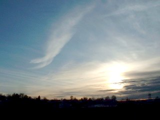
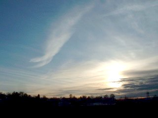

Levels Adjustment
The Levels adjustment can be used to alter the color range (or "exposure") of an image, including gamma adjustments, on a channel-by-channel basis. Most adjustments performed using levels consist of changing a pictures input and output white point, black point, and grey point. The white point of an image is the brightest color that appears in the image, while the black point is the darkest color that will appear in an image. The grey point represents the average color of the entire image.

Each of these color points of an image may be adjusted using Levels. In the dialog above, there are 5 numeric inputs and 5 color swatches. The two along the left side in the 'Input' section indicate the input white and black points. These colors may be adjusted using the numeric inputs, the slider, or by double-clicking on the color swatches. The white point on this side is the color that should be adjusted to become the white point selected on the right side. When the adjustment is performed, colors in the image as bright or brighter than this color will adjust to be equal to the output white point (in the above screenshot, the output white point has been left at its default value, white). Correspondingly, the input black point has been adjusted in the dialog pictured above, so the darkest colors of the output image will be adjusted to be simply black. By adjusting the white point to be slightly darker, we are making that same dark color be as bright as white in the output, and by adjusting the black point to be slightly brighter, we are making those dark colors of the image absolutely black. Also, in the dialog above, the output grey point has been adjusted to be slightly brighter. While this does not effect the whites and blacks of the image, it causes the overall color of the image to be brightened.
 

These adjustments end up stretching the range of an image, visible through the histograms on each side of the levels dialog. The histogram on the left indicates the color curve of the image before any adjustment, this histogram represents the amount of an image that is equal to a given color. In the case of the one pictured above, the histogram indicates that a significant portion of the image is nearly black, with a second bulge around 40% brightness. Also, the small spike at the top edge of the input histogram indicates that there is a small portion of the image that is completely white.
With Level's default settings, the output histogram will be equal to the input histogram. Every adjustment that is performed on the image, however, will cause the output histogram to be updated to represent the changes that will result in the output image. Causing the output histogram to be spread thinner results in an image with higher contrast. Squishing the histogram to a single peak, on the other had, will result in an image with very low contrast. Any of the adjustments between these extremes are possible with levels. In the screenshot above, a significant portion of the image is 'blacked out', resulting in a large spike at the bottom end. The same is true of the top end, where much of the image is 'whited out'. Overall, the histogram has been stretched very thin, as evident from the high contrast present in the image.
Up to this point, all adjustments have been performed on a all channels, red, green and blue. By using the R, G, B checkboxes (pictured below), individual channels may be adjusted separately (as well as two at a time). In the picture below, the gamma has been adjusted for the green and blue channels at the same time, causing the level of cyan in the image to drop overall. This accentuates the red of the image, as shown in the picture below.


Copyright © 2007
Rick Brewster, Tom Jackson, and past contributors. Portions Copyright
© 2007 Microsoft Corporation. All Rights
Reserved.